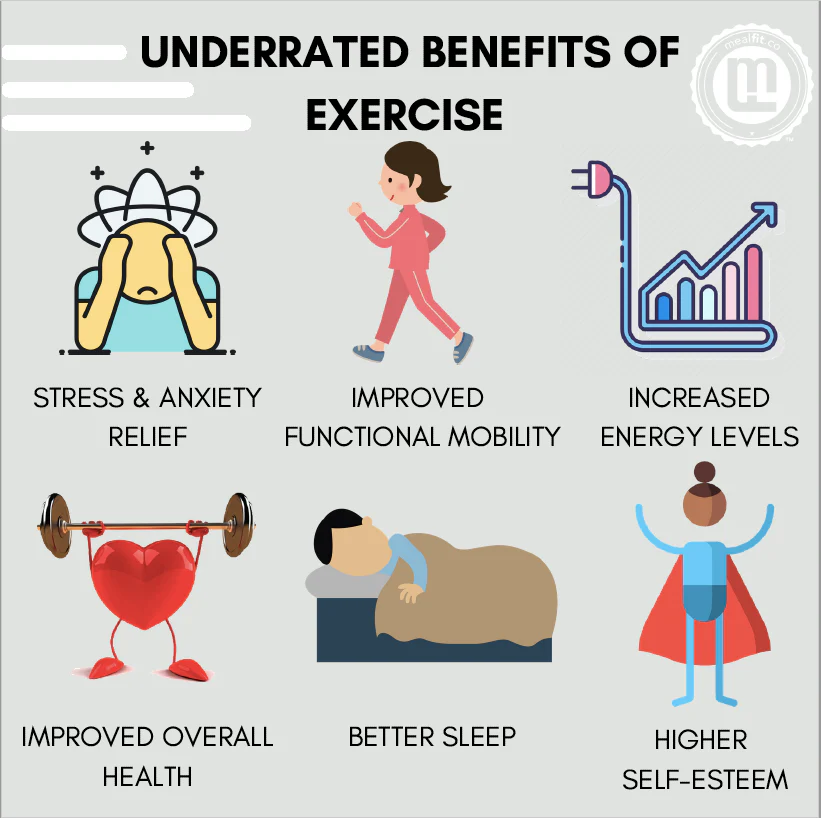

Benefits of Exercise
What is Exercise?
- Exercise is physical activity that is planned, structured, and repeated to improve or maintain physical fitness
and health.
- Exercise is any activity that makes your body move and helps keep you healthy and strong.
Examples:
- Walking
- Running
- Cycling
- Swimming
- Yoga
- Weight training
Exercise Improves:
- Strength
- Flexibility
- Endurance
- Mental health
- Overall fitness
History of Exercise
Ancient Period
- Ancient Greece (around 700 BC) emphasized physical fitness for war and sports.
- The Ancient Olympic Games encouraged running, wrestling, and discus throwing.
Roman Period
- Romans used exercise mainly for military training.
- Soldiers practiced strength and endurance activities.
Indian Tradition
- India developed Yoga more than 5000 years ago for physical, mental, and spiritual health.
Modern Era
- In the 19th and 20th centuries, exercise became part of modern sports, fitness training, and gym culture.
- Today exercise is recommended by health organizations worldwide.
Types of Exercise
- Aerobic Exercise
- Strength Training
- Flexibility Exercises
- Balance Exercises
Benefits of Exercise

